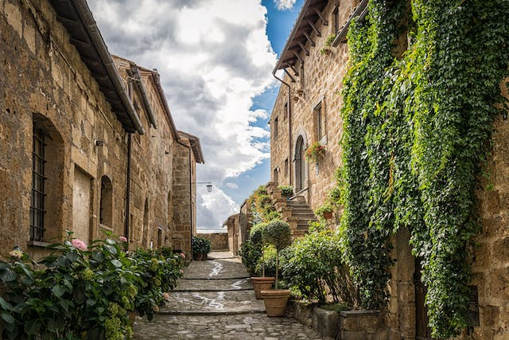
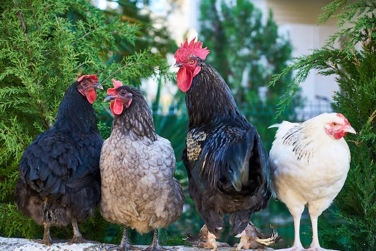
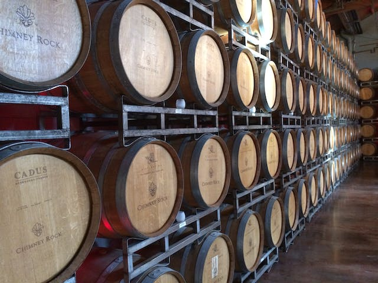

Krezk is a walled village in the Northwest of Barovia, built in the shadow of a beautiful Abbey. The citizens are relatively insular but very welcoming to customers of the Krezk City Hopper. The town is built out of an old garrison; from the conflicts of the past we are building the peace of the future. The centre of town has a pool which has healing properties for locals and visitors to avail of. As a visitor the weather will throw you no surprises; every day of the year boasts a stable grey sky with a light smattering of rain. Not too much sun, not too much rain, just right.
The village is mostly a collection of small cottages, sitting at the foot of a steep mountain. Five hundred feet up the precipice sits the Abbey of Saint Markovia, in which dwells the enigmatic Abbot. The people of Krezk strive to be as self sufficient as possible. They grow many trees, as well as beets and turnips for food. They also keep chickens, hares and small pigs. Krezk is surrounded by the Svalich Woods, which is excellent for hunting, but also hiking and family picnics.
Krezk is a popular spot for the enigmatic Wizards of Wine Winery. Their wine is famed throughout Barovia but difficult to get; here in Krezk it is free-flowing and a popular souvenir for visitors. Legends are told of a divine being being sighted in centuries past; perhaps this is the reason the winery holds Krezk in such high favour. Chief exports are pelts and meats, chief imports are grain and wine. Krezk locals are known for being experts in a number of trades, such as tailors, dressmakers and cobblers.
